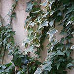

アコーディオン
● 右端に「-」または「＋」マークの付いている見出しをクリックすると、ボックスがアコーディオンで開閉します。
追従型ナビゲーション
● スクロールをすると、左のナビゲーションがついてきます。
● ナビゲーションの大項目をクリックすると、ゆっくりと開閉します。
スライダー・タブ切り替え
● タブをクリックすることで、表示内容が切り替わります。
● 【タブ内】スライダーやフェードで複数の画像を切り替えて表示しています。
タイル貼り風のボックス配置
● 高さの異なる画像でも、隙間なく配置できます（IE7以前は未対応）
【通常時】

【タイル張り風】
ロールオーバー1
● マウスを乗せると、背景色がゆっくり反転します
（IE9以下ではすぐに反転しますが、
追加JSで同様の動きを再現可能です）
プルダウンメニュー
● マウスを乗せると、サブメニューが開きます
（IE8以下は角丸部分が四角く表示されます）